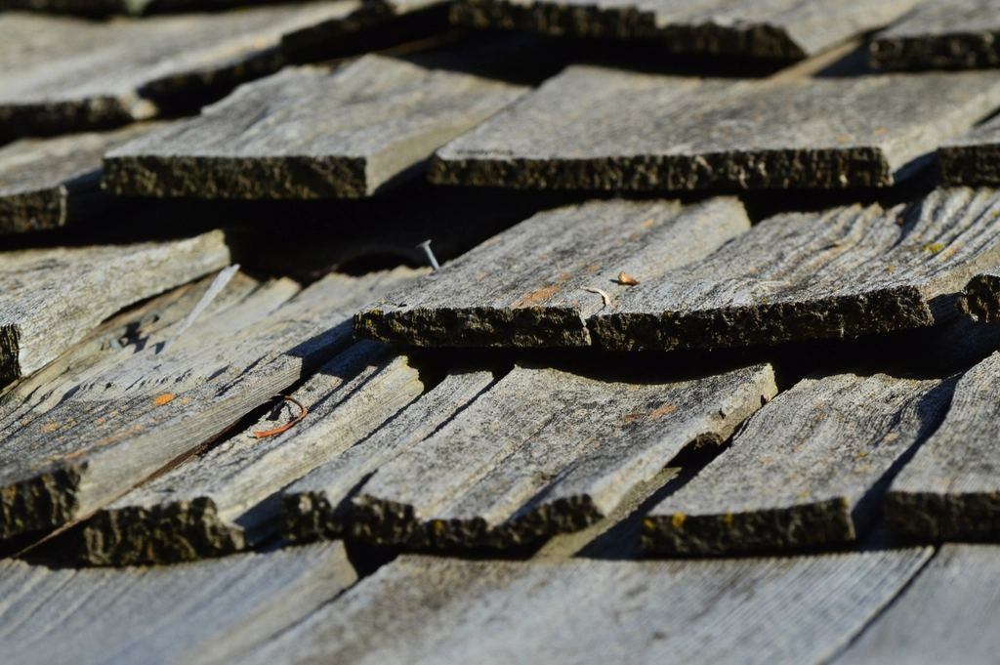
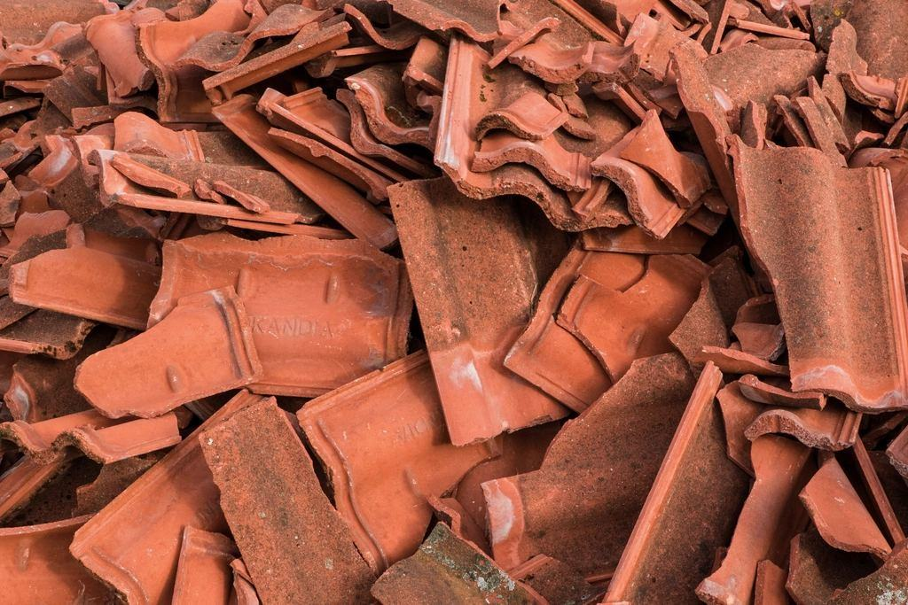
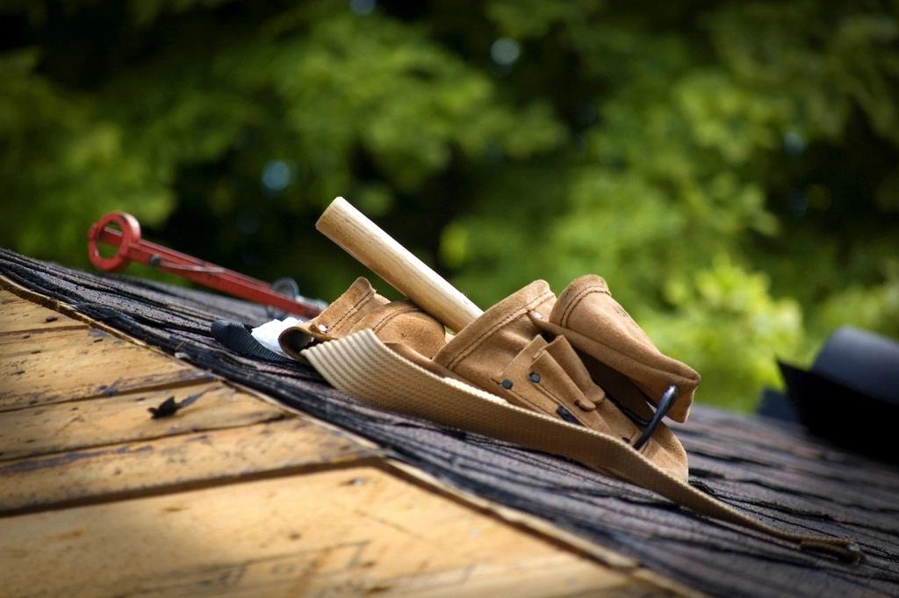

Våra projekt
Ett urval av det vi har byggt och renoverat.
- 2026

Storgatan 24
Nytt falsat tak och kopparhuv på hörntornet till ett hus från 1891.
- 2026

Brf Esplanaden 9
Omputsning med kalkbruk, nya konsoler och avfärgning i originalkulör.
- 2025

Kyrkogatan 7–11
312 kopplade fönster renoverade med linoljefärg och nya innerbågar.
- 2025

Gamla tullhuset
Skiffertak, plåtdetaljer och putslagning på ett kulturmärkt hus vid hamnen.
- 2024

Brf Nybrogatan
Omläggning av 740 kvadratmeter tak och tolv nya takkupor efter bygglov.
- 2027

Thulehemmet
Projektering pågår för omläggning av hela taket på ett stenhus från 1897.
Föreningar på Storgatan och Esplanaden
”Ställningen stod uppe i sju veckor och trottoaren var öppen hela tiden. Kupan över vår lägenhet ser exakt ut som den gamla, fast den inte läcker.”
Annika L. · Kyrkogatan, Sundsvall”Vi trodde att fönstren måste bytas. Selånger visade att virket var friskt och räddade alla utom fyra.”
Hans W. · Brf Esplanaden 9”Pärmen med kulörer och bilder från varje fasad har redan hjälpt oss när vi pratat med stadsbyggnadskontoret.”